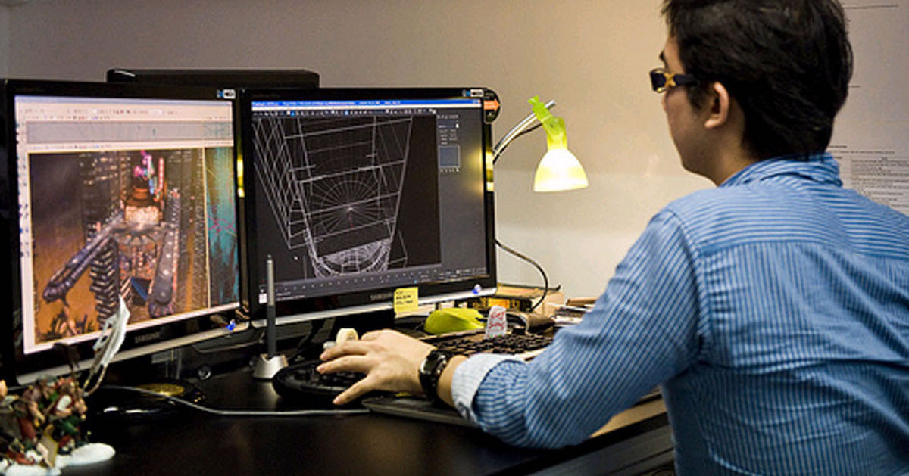

Los videjouegos, a pesar de ser usualmente vistos como algo para niños o para personas inmaduras que siguen añorando sus años dorados, en realidad son una forma establecida del arte, combinando un gran número de áreas que van desde el diseño gráfico, el arte conceptual, el storytelling, el diseño de audio, la composición músical, entre otras.
Esto puede sonar intimidante, pero es posible comenzar a crear videjouegos sin conocimientos de programación, sin saber cómo se crea un personaje, sin haber tocado nunca un motor de desarrollo o sin tener guardadas en un cajón del cerebro las nociones básicas del diseño de videojuegos. Todo eso y mucho más está al alcance de un click, y lo único que necesitas es un poco de voluntad para iniciar el reto

Trabajo en conjunto de diversas expresiones artísticas.
¿Cómo Empezar?
UNITY
Es el motor de videojuegos más famoso, y por lo tanto es muy fácil de aprender gracias a la comunidad a su alrededor. Además es gratis, por lo que solamente necesitarás descargarlo para poner en marcha tus ideas. Sin embargo, requiere una computadora no muy limitada en el aspecto técnico, especialmente si intentas realizar algo en 3D.
GODOT
Una recomendación personal, godot es un motor de videjouegos de código abierto extremadamente ligero, pero a su vez poderoso. A pesar de no tener una comunidad tan grande como la de unity, cada día se estan sumando más desarolladores y entusiastas que comparten sus conocimientos. Brilla especialmente para proyectos en 2D.
GAMEMAKER STUDIO
Si quieres crear videojuegos pero no te agrada la idea de programar, Gamemaker Studio es la opción ideal para ti. Es un motor fácil de utilizar, sin sacrificar en su robustez y su potencial. Lo único que deberás desarollar es la lógica, hecho fácil gracias a su editor visual.
Recursos
Aquí hay un tutoriale que puede ayudarte a comenzar tu exploración del medio, si te interesa aún más recomiendo hacer tus propios proyectos, y abandonar poco a poco los tutoriales. Recuerda que son una herramienta, no los trates como un testamento.